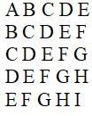
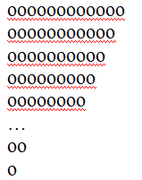

0. Вивести на екран

11.1 Вивести на екран усі трицифрові числа, у яких перша цифра є
більшою або рівною за суму другої і третьої.
3. Відобразити трикутник за допомогою символів «о»

4. Побудувати ялинку
5. Інвестор вклав тис. грн на 20 років під 20% річних. Визначити за
допомогою циклів суму, яку він одержить (без оподаткування).